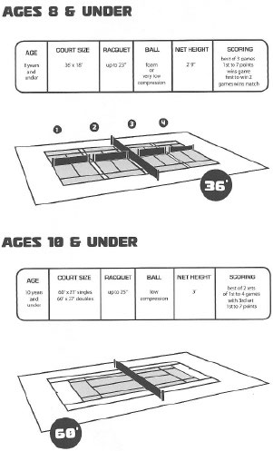
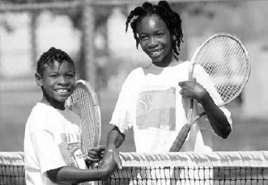
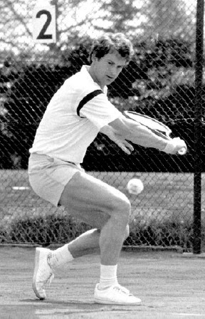
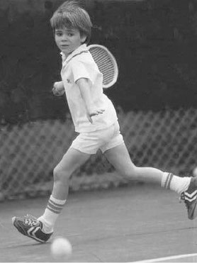

Phần I: Triết Lý Sư Phạm, Quy Trình Phát Triển Trẻ Em & Phương Pháp Luận Giảng Dạy
Phương pháp đào tạo chuẩn mực USTA, các mốc phát triển sinh lý tâm lý theo lứa tuổi và nghệ thuật tổ chức buổi tập đỉnh cao của huấn luyện viên Martin van Daalen
1. Lời Tựa & Khởi Đầu Sự Nghiệp Huấn Luyện Viên (Getting Started & Philosophy)
Dạy học quần vợt không đơn thuần là việc đứng trên sân ném từng quả bóng qua lưới và hô hào khẩu lệnh một cách máy móc.
Nghề huấn luyện viên quần vợt là một sự kết hợp tinh tế giữa nghệ thuật sư phạm, khoa học cơ sinh học, tâm lý học lứa tuổi và niềm đam mê truyền lửa bất tận.
Martin van Daalen, với tư cách là Huấn luyện viên Quốc gia của Hiệp hội Quần vợt Hoa Kỳ (USTA National Coach) và người thầy từng dìu dắt tay vợt hai lần vô địch Grand Slam Mary Pierce cùng nhà vô địch thế giới nội dung đôi Jared Palmer, đã đúc kết toàn bộ hành trình ba mươi năm cống hiến vào tập sách đồ sộ này.
Triết lý huấn luyện cốt lõi của Van Daalen bao gồm các nguyên lý căn bản:
Thứ nhất, đặt vận động viên làm trung tâm của tiến trình phát triển (Player-Centered Coaching). Người thầy giỏi không áp đặt cái tôi hoặc sao chép rập khuôn một kỹ thuật duy nhất lên mọi học sinh; người thầy vĩ đại là người biết nhận diện tố chất cơ thể, cấu trúc khớp xương và cá tính riêng biệt của từng đứa trẻ để giúp các em phát huy tiềm năng tự nhiên tối đa.
Thứ hai, xây dựng nền tảng vững chắc trước khi theo đuổi thành tích tức thời. Tránh xu hướng đốt cháy giai đoạn vì những chiếc cúp giải trẻ lứa tuổi mười hay mười hai; mục tiêu cao nhất của người huấn luyện viên là kiến tạo một hệ thống kỹ thuật chuẩn xác, bền bỉ và không gây chấn thương để vận động viên đạt đỉnh cao phong độ ở độ tuổi trưởng thành.
Thứ ba, người thầy phải là tấm gương sáng về đạo đức, kỷ luật và tác phong chuyên nghiệp. Mọi lời nói, cử chỉ và thái độ của huấn luyện viên trên sân tập đều in sâu vào tâm trí non nớt của học trò, định hình nhân cách của các em cả trong thể thao lẫn cuộc sống đời thường.
2. Các Giai Đoạn Phát Triển Thể Chất & Tâm Lý Trẻ Em (Stages of Growth and Development)
Hiểu rõ các giai đoạn phát triển sinh học của trẻ em là điều kiện tiên quyết để xây dựng giáo án huấn luyện thích hợp và an toàn.
Van Daalen phân chia tiến trình phát triển của một vận động viên trẻ thành bốn giai đoạn then chốt:
Giai đoạn nền tảng từ năm đến bảy tuổi (The Discovery Stage): Trẻ em ở lứa tuổi này có khoảng chú ý rất ngắn và hệ thần kinh vận động đang trong giai đoạn sơ khai. Mục tiêu hàng đầu là tạo niềm vui, kích thích sự phối hợp tay mắt thông qua các trò chơi vận động đa dạng, sử dụng vợt ngắn và bóng nảy thấp (bóng đỏ xốp). Tuyệt đối không nhồi nhét lý thuyết kỹ thuật phức tạp gây chán nản cho trẻ.
Giai đoạn học hỏi kỹ năng vận động từ tám đến mười tuổi (The Fundamental Skill Stage): Đây là "giai đoạn vàng" của sự phối hợp vận động thần kinh. Trẻ em hấp thụ các chuyển động kỹ thuật mới cực kỳ nhanh chóng. Huấn luyện viên cần tập trung rèn luyện bộ pháp linh hoạt, các kiểu cầm vợt cơ bản, tư thế sẵn sàng và cơ chế nạp lực nhún gối. Quả bóng cam và bóng xanh lá cây là công cụ lý tưởng trong giai đoạn này.
Giai đoạn bùng nổ thể chất từ mười một đến mười bốn tuổi (The Training to Train Stage): Giai đoạn dậy thì mang đến sự thay đổi nhảy vọt về chiều cao, độ dài các chi và trọng lượng cơ thể. Sự thay đổi đột ngột này có thể làm xáo trộn cảm giác thăng bằng tạm thời của vận động viên. Huấn luyện viên cần kiên nhẫn điều chỉnh lại điểm tiếp xúc bóng, tăng cường rèn luyện sức bền tim mạch, cơ lõi và sức mạnh cơ bắp dẻo dai.
Giai đoạn tôi luyện thi đấu từ mười lăm đến mười tám tuổi (The Training to Compete Stage): Vận động viên hoàn thiện toàn diện lối chơi sở trường, định hình phong cách tác chiến cá nhân và nâng cao khả năng quản lý cảm xúc trong những tình huống căng thẳng tột độ.
3. Phương Pháp Luận Sư Phạm & Cấu Trúc Buổi Học Hiệu Quả (Methodology & Lesson Organization)
Một buổi tập luyện quần vợt chất lượng cao không bao giờ diễn ra một cách tùy tiện hay ngẫu hứng.
Van Daalen đề xuất quy trình chuẩn hóa gồm năm bước cho mọi buổi tập trên sân:
Bước một, phần khởi động động (Dynamic Warm-up): Kéo dài mười lăm phút với các bài tập tăng dần nhịp tim, xoay khớp và kích hoạt hệ thần kinh cơ, loại bỏ hoàn toàn thói quen ép dẻo tĩnh truyền thống trước khi vận động mạnh.
Bước hai, giới thiệu mục tiêu và minh họa trực quan (Explanation & Demonstration): Huấn luyện viên trình bày ngắn gọn mục tiêu của buổi tập dưới ba phút, sau đó thực hiện thị phạm mẫu động tác rõ ràng với tốc độ chậm để học viên khắc ghi hình ảnh chuyển động vào não bộ.
Bước ba, chuỗi bài tập cô lập kỹ thuật (Progression Drills): Học viên thực hiện động tác từ trạng thái tĩnh, ném bóng cự ly gần đến di chuyển đánh bóng nhịp độ tăng dần.
Bước tư, tình huống thi đấu thực chiến có điều kiện (Point Play with Tactical Constraints): Áp dụng kỹ thuật vừa học vào các pha bóng tính điểm thực tế nhằm kiểm tra tính ổn định dưới áp lực đối kháng.
Bước năm, đánh giá tổng kết và hạ nhiệt (Cool-down & Feedback): Học viên thả lỏng cơ thể, trao đổi cởi mở với huấn luyện viên về những điều làm tốt và những điểm cần cải thiện trong buổi tập tiếp theo.

Hình 1: Huấn luyện viên Martin van Daalen — Cựu HLV Trưởng Quốc gia USTA, người đặt nền móng phương pháp giảng dạy hiện đại cho hàng ngàn thế hệ HLV quần vợt.
Phần II: Hướng Dẫn Kỹ Thuật Cốt Lõi, Hệ Thống Cán Cầm Vợt & Cơ Học Cú Đánh Cuối Sân
Phân tích giải phẫu học các kiểu cán cầm, các giai đoạn then chốt của cú thuận tay và sự khác biệt cơ sinh học giữa cú trái tay một tay và hai tay
4. Hệ Thống Cán Cầm Vợt & Các Sai Lầm Phổ Biến (Grips & Instructional Errors)
Cán cầm vợt là điểm tiếp xúc vật lý duy nhất giữa cơ thể vận động viên và cây vợt, đóng vai trò then chốt quyết định góc nghiêng của mặt vợt tại thời điểm tiếp xúc bóng.
Trong giáo trình giảng dạy của mình, Van Daalen định nghĩa chi tiết vị trí gờ vát số một đến số tám trên chu vi hình bát giác của cán vợt và ứng dụng chuẩn mực của từng kiểu cầm:
Kiểu cầm Continental (Gờ vát số hai): Đây là kiểu cầm nền tảng bắt buộc đối với cú giao bóng, cú bắt vô-lê trên lưới, cú đập bóng trên cao Overhead Smash và cú cắt bóng Slice. Sai lầm nghiêm trọng nhất của người mới chơi là cố gắng sử dụng kiểu cầm này để thực hiện cú thuận tay bóng xoáy cồng kềnh, dẫn đến lực đẩy yếu và nguy cơ viêm gân khuỷu tay.
Kiểu cầm Eastern Forehand (Gờ vát số ba): Cho phép tạo ra cú đánh bóng phẳng chắc chắn và độ chính xác cao khi tiếp xúc bóng ở tầm ngang hông, là kiểu cầm lý tưởng cho người mới bắt đầu làm quen với cú thuận tay.
Kiểu cầm Semi-Western (Gờ vát số bốn): Đây là tiêu chuẩn vàng của quần vợt hiện đại. Cán Semi-Western đặt mặt vợt hơi úp xuống một cách tự nhiên, cho phép người chơi dễ dàng tạo độ xoáy Topspin cuộn sâu mà vẫn duy trì được tốc độ bóng xé gió khi bóng bay cao ngang ngực.
Kiểu cầm Western (Gờ vát số năm): Thích hợp cho mặt sân đất nện nảy cao, tuy nhiên hạn chế khả năng tấn công những quả bóng thấp và đòi hỏi chuyển động bẻ cổ tay cực kỳ phức tạp.
Van Daalen cảnh báo huấn luyện viên không nên vội vã uốn nắn một đứa trẻ chuyển sang kiểu cầm cực đoan Western khi cấu trúc cổ tay và cẳng tay của các em chưa phát triển đầy đủ.
5. Cơ Sinh Học & Bốn Giai Đoạn Then Chốt Của Cú Thuận Tay (Key Positions of the Forehand)
Một cú thuận tay hiện đại đạt chuẩn mực không được tạo ra từ sức mạnh đơn độc của cánh tay, mà là kết quả của một chuỗi động học liên hoàn từ mặt đất truyền lên cơ thể.
Van Daalen phân rã cú thuận tay thành bốn giai đoạn kỹ thuật then chốt:
Giai đoạn chuẩn bị và xoay trục cơ thể (Unit Turn): Ngay khi mắt nhận diện được hướng bay của quả bóng, vận động viên phải xoay đồng bộ vai, hông và tay không cầm vợt hướng về phía bên hông thay vì chỉ kéo cánh tay cầm vợt ra sau. Cánh tay không thuận giữ vai trò nâng đỡ cổ vợt và căn cước cự ly với bóng.
Giai đoạn hạ đầu vợt tạo trễ (The Racquet Drop & Lag): Người chơi nhún gối nạp lực vào chân trụ, thả lỏng cổ tay và cẳng tay để đầu vợt hạ xuống dưới tầm bay của quả bóng. Khi thân người bắt đầu xoay về phía trước, đầu vợt sẽ tự động bị kéo trễ lại phía sau (Racquet Lag), tích lũy năng lượng đàn hồi khổng lồ giống như một dây cung được kéo căng.
Giai đoạn tiếp xúc bóng bùng nổ (The Forward Swing & Contact): Trọng tâm cơ thể đẩy mạnh từ chân trụ lên trên, hông và vai xoay mở mạnh mẽ qua bóng. Điểm tiếp xúc bóng lý tưởng nằm ở phía trước thân người khoảng hai mươi đến ba mươi centimet, mặt vợt vuông góc với hướng đánh tại thời điểm va chạm.
Giai đoạn vung vợt kết thúc và phục hồi (Extension & Follow-Through): Mặt vợt tiếp tục được kéo dài qua đường bóng trước khi quất ngang thân người theo kỹ thuật gạt kính chắn gió Windshield Wiper, kết thúc mượt mà bên sườn đối diện để triệt tiêu lực quán tính an toàn.
6. Cú Trái Tay Một Tay Đối Trọng Với Cú Trái Tay Hai Tay (Backhand Mechanics)
Việc lựa chọn cú trái tay một tay hay hai tay cho một vận động viên trẻ là một trong những quyết định chiến lược quan trọng nhất trong sự nghiệp huấn luyện.
Van Daalen đưa ra bản đối chiếu cơ sinh học chuyên sâu giữa hai kỹ thuật:
Cú trái tay hai tay (The Two-Handed Backhand): Đây là sự lựa chọn tối ưu cho đại đa số người chơi hiện đại, đặc biệt là các tay vợt nữ và trẻ em. Nhờ sự trợ lực của cánh tay không thuận, vận động viên có thể dễ dàng kiểm soát những đường bóng xoáy nảy cao ngang vai và xử lý các cú giao bóng nặng nề một cách tự tin. Ngoài ra, cú đánh hai tay cho phép thực hiện động tác vung vợt ngắn gọn hơn khi bị đối phương dồn ép vào góc sân hiểm hóc.
Cú trái tay một tay (The One-Handed Backhand): Đòi hỏi sức mạnh vượt trội của khối cơ vai, lưng trên và cẳng tay. Điểm tiếp xúc bóng của cú trái tay một tay phải xa hơn về phía trước thân người và đòi hỏi khả năng định vị khoảng cách cực kỳ chính xác. Lợi thế tuyệt đối của cú đánh một tay là tầm với rộng hơn, sự biến hóa linh hoạt khi chuyển đổi sang cú cắt bóng Slice và cảm giác lên lưới bắt vô-lê thanh thoát.
Huấn luyện viên phải tôn trọng cảm nhận tự nhiên của học sinh: nếu một đứa trẻ có cánh tay yếu và thường xuyên để bóng ăn sâu vào thân người, hãy kiên trì rèn luyện cú trái hai tay vững chắc trước khi thử nghiệm cú đánh một tay.

Hình 2: Phân tích cơ sinh học chuỗi động học của cú thuận tay hiện đại theo giáo trình huấn luyện chuyên nghiệp của Martin van Daalen.
Phần III: Cú Giao Bóng Uy Lực, Kỹ Năng Lưới Hiện Đại & Khoa Học Bộ Pháp Di Chuyển
Chuỗi động học phát bóng đỉnh cao, nghệ thuật bắt vô-lê ngắn gọn trên lưới và phương pháp rèn luyện bộ pháp bước tách Split-Step
7. Cơ Học Chuỗi Động Của Cú Giao Bóng (Key Positions of the Serve)
Cú giao bóng là cú đánh duy nhất trong môn quần vợt mà người chơi có toàn quyền kiểm soát không gian, thời gian và quỹ đạo xuất phát của quả bóng mà không chịu sự can thiệp từ đối thủ.
Van Daalen mô tả cú giao bóng như một chuỗi bẻ gãy và giải phóng các khớp xương theo trình tự thời gian cực kỳ nghiêm ngặt:
Kiểu cầm Continental bắt buộc: Bàn tay phải nắm chắc ở gờ vát số hai. Nếu vận động viên cầm cán thuận tay Eastern để giao bóng, họ chỉ có thể "đập" bóng phẳng một cách giới hạn mà không thể thực hiện chuyển động xoay sấp cẳng tay (Pronation) hay tạo các đường bóng xoáy Slice và Kick Serve hiểm hóc.
Tung bóng chuẩn xác và nhịp nhàng (The Ball Toss): Quả bóng phải được nâng lên một cách nhẹ nhàng bằng các đầu ngón tay mở rộng, cánh tay nâng thẳng và không xoay cổ tay. Điểm rơi lý tưởng của quả bóng nằm hơi chếch về phía trước vạch phát bóng khoảng ba mươi đến bốn mươi centimet bên phía tay thuận.
Tư thế chiếc cúp vinh quang (The Trophy Pose): Khi quả bóng đạt đỉnh điểm trên không, cơ thể vận động viên tạo thành hình chiếc cúp: đầu gối khuỵu sâu nạp lực, hông đẩy nhẹ về phía trước sân, vai nghiêng một góc bốn mươi lăm độ với vai không cầm vợt nâng cao và đầu vợt chúc ngược phía sau lưng giống như gãi lưng.
Xoay sấp cẳng tay phát lực bùng nổ (Pronation): Khi vung vợt lên đón bóng, cẳng tay và cổ tay xoay sấp dữ dội từ trong ra ngoài. Cạnh mặt vợt dẫn đường cho đến phần nghìn giây cuối cùng trước khi xoay mở vuông góc để tiếp xúc tâm bóng ở điểm cao nhất của tầm với cánh tay.
8. Nghệ Thuật Bắt Vô-Lê Trên Lưới (Key Positions of the Volley)
Nhiều người chơi nghiệp dư thất bại thảm hại khi lên lưới vì họ cố gắng thực hiện một cú vung vợt đầy đủ như khi đánh bóng ở cuối sân.
Van Daalen nhấn mạnh rằng cú bắt vô-lê không phải là một cú đánh vung tay, mà là một cú đấm ngắn gọn (A Compact Punch) và chặn hướng bóng:
Không mở vợt ra sau thân người: Đầu vợt luôn phải được duy trì ở phía trước tầm nhìn của mắt. Biên độ lùi vợt chuẩn xác không bao giờ được vượt quá đường thẳng của bờ vai.
Cổ tay khóa cứng và đầu vợt dựng đứng: Mặt vợt hơi mở ngửa lên trên để hãm xung lực của quả bóng tới và tạo độ xoáy ngược Backspin cắn sâu xuống mặt sân. Cổ tay tuyệt đối không được mềm yếu hay bẻ gập khi tiếp xúc bóng.
Bước chân đối diện đón bóng: Khi thực hiện cú vô-lê thuận tay, vận động viên bước chân trái chéo tới phía trước; ngược lại, đối với cú vô-lê trái tay, chân phải bước chéo lên để khóa hướng và dồn toàn bộ trọng lượng cơ thể vào điểm va chạm.
9. Khoa Học Bộ Pháp Di Chuyển & Bước Tách Split-Step (Footwork Principles)
Quần vợt là môn thể thao của đôi chân trước khi là môn thể thao của đôi tay.
Mọi kỹ thuật vung vợt hoàn mỹ đều trở nên vô nghĩa nếu đôi chân của bạn không đưa cơ thể đến đúng vị trí kịp thời.
Van Daalen phân tích chi tiết bốn trụ cột của bộ pháp di chuyển chuyên nghiệp:
Bước tách Split-Step: Đây là phản xạ bắt buộc phải thực hiện trong mọi pha bóng. Đúng vào thời điểm vợt của đối phương tiếp xúc với quả bóng, bạn phải thực hiện một cú nhún nhảy nhẹ bằng cả hai bàn chân tiếp đất rộng bằng vai. Bước nhảy này nạp căng các sợi cơ bắp chân giống như chiếc lò xo, sẵn sàng bùng nổ sang bất kỳ hướng nào ngay tức khắc.
Bước rơi trọng lực (Gravity Step): Khi nhận diện hướng bóng sang hai bên biên, thay vì bước chân gần bóng trước, vận động viên thả nhanh trọng tâm và đá nhẹ chân đối diện ra sau để mở góc xoay của hông, cho phép cơ thể bứt tốc nhanh hơn ba mươi phần trăm.
Bước đan chéo phục hồi (Crossover Step): Sau khi hoàn tất cú đánh ở góc sân, bước di chuyển đầu tiên để quay lại trung tâm sân phải là bước chân ngoài vắt chéo qua phía trước chân trong nhằm bao quát cự ly tối đa, sau đó mới chuyển sang các bước trượt ngang Side-Shuffle để quan sát đối thủ.

Hình 3: Huyền thoại Mary Pierce — Nhà vô địch Roland Garros và Australian Open, một trong những minh chứng rực rỡ nhất cho phương pháp huấn luyện bài bản của Martin van Daalen.
Phần IV: Tư Duy Chiến Thuật, Chu Kỳ Huấn Luyện & Cẩm Nang Dành Cho Phụ Huynh
Năm tình huống chiến thuật cốt tử trong quần vợt, phương pháp phân bổ lịch thi đấu dài hạn và nghệ thuật đồng hành cùng con trẻ của cha mẹ
10. Giảng Dạy Năm Tình Huống Chiến Thuật Cốt Tử (Teaching Tactical Aspects)
Kỹ thuật là công cụ, còn chiến thuật mới là trí tuệ điều khiển công cụ đó trên sân đấu.
Van Daalen phân định toàn bộ trận đấu quần vợt thành năm tình huống chiến thuật nền tảng mà mỗi huấn luyện viên phải truyền thụ có hệ thống cho học trò:
Tình huống một, khi bạn đang thực hiện cú giao bóng: Mục tiêu không phải là ghi điểm trực tiếp mọi lúc, mà là tước đoạt thế chủ động của đối phương, ép họ trả về một quả bóng ngắn hoặc lệch tâm để bạn tung đòn kết liễu ở cú đánh thứ ba.
Tình huống hai, khi bạn đang trả giao bóng: Mục tiêu tối thượng là vô hiệu hóa vũ khí phát bóng của đối thủ, đưa bóng an toàn qua lưới vào các vị trí sâu và mở màn cho loạt bóng bền sòng phẳng.
Tình huống ba, loạt đôi công giằng co từ vạch cuối sân (Baseline Rally): Giữ vững cự ly an toàn trên mép lưới ít nhất một mét, duy trì độ sâu bóng cách vạch đáy sân dưới hai mét và kiên nhẫn tìm kiếm cơ hội ép đối phương ra khỏi góc sân.
Tình huống bốn, khi bạn tiến lên chiếm lĩnh lưới (Approaching the Net): Chỉ lao lên lưới khi đã tung ra một cú đánh tiếp cận (Approach Shot) có độ sâu hiểm hóc hoặc đẩy đối phương vào thế với tay chống đỡ bị động.
Tình huống năm, khi bạn bị dồn vào thế phòng ngự ngặt nghèo (Defending Against the Net Rusher): Lựa chọn một cú lốp bóng qua đầu (Lob) bổng sâu để tái lập thời gian hồi phục vị trí, hoặc tung ra một cú đánh bạt bóng xé góc luồn qua nách đối thủ (Passing Shot).
11. Kế Hoạch Huấn Luyện Chu Kỳ & Lịch Trình Thi Đấu Dài Hạn (Periodization & Tournament Planning)
Một sai lầm chí mạng hủy hoại sự nghiệp của nhiều tài năng trẻ triển vọng là việc tham gia thi đấu quá tải từ tuần này sang tuần khác mà không có chu kỳ hồi phục và nâng cấp kỹ thuật.
Van Daalen khuyến nghị mô hình chu kỳ huấn luyện khoa học gồm ba cấp độ:
Chu kỳ lớn hàng năm (Macrocycle): Phân chia năm thi đấu thành ba giai đoạn rõ rệt: giai đoạn chuẩn bị nền tảng thể lực và chỉnh sửa kỹ thuật (kéo dài tám đến mười hai tuần), giai đoạn tiền thi đấu cọ xát giao hữu (bốn đến sáu tuần), và giai đoạn thi đấu đỉnh cao tại các giải vô địch quốc gia hoặc quốc tế.
Chu kỳ trung hạn hàng tháng (Mesocycle): Mỗi chu kỳ kéo dài bốn tuần, tuân thủ nguyên lý tăng dần khối lượng và cường độ trong ba tuần đầu, sau đó dành trọn vẹn tuần thứ tư để giảm tải cho các cơ bắp và hệ thần kinh tái tạo năng lượng.
Chu kỳ vi mô hàng tuần (Microcycle): Phân bổ cân bằng giữa các buổi rèn luyện kỹ thuật, bài tập chiến thuật trên sân, các buổi tập thể lực SAQ (Speed, Agility, Quickness) và thời gian nghỉ ngơi thư giãn.
Quy tắc vàng cho các tay vợt dưới mười bốn tuổi: Tỷ lệ tập luyện trên thi đấu phải duy trì ở mức ba trên một; nghĩa là cứ ba tuần tập luyện nâng cao kỹ thuật mới tham gia một tuần thi đấu giải chính thức.
12. Cẩm Nang Dành Cho Phụ Huynh & Giải Quyết Xung Đột (Tips for Parent Coaches)
Mối quan hệ tam giác vàng giữa Vận động viên, Huấn luyện viên và Phụ huynh là chiếc kiềng ba chân quyết định sự thành bại của một đứa trẻ trên con đường quần vợt.
Van Daalen gửi gắm những lời khuyên chân thành và sâu sắc nhất tới các bậc cha mẹ:
Tách bạch vai trò làm cha mẹ và vai trò làm huấn luyện viên: Đứa trẻ cần tình yêu thương vô điều kiện của cha mẹ sau mỗi trận đấu, chứ không cần thêm một vị trọng tài hay một nhà phê bình gay gắt trên chiếc xe hơi trên đường về nhà. Đừng bao giờ biến bữa cơm gia đình thành một phiên tòa mổ xẻ những pha bóng hỏng của con.
Tôn trọng quyền quyết định chuyên môn của huấn luyện viên: Nếu cha mẹ liên tục đứng ngoài hàng rào chỉ trích hoặc can thiệp vào các chỉ đạo kỹ thuật của thầy, đứa trẻ sẽ bị rơi vào trạng thái bối rối và mất phương hướng nghiêm trọng. Hãy giao trọn niềm tin chuyên môn cho người thầy mà bạn đã lựa chọn.
Khen ngợi sự nỗ lực và tinh thần thể thao thay vì chỉ nhìn vào tỷ số: Thành tích nhất thời có thể thăng trầm theo ngày tháng, nhưng phẩm chất trung thực, sự kiên trì và tinh thần chiến đấu quả cảm mới là những giá trị theo suốt cuộc đời con bạn.

Hình 4: Đào tạo vận động viên trẻ toàn diện về kỹ thuật, thể lực và tâm lý theo tiến trình khoa học chuẩn mực của Martin van Daalen.